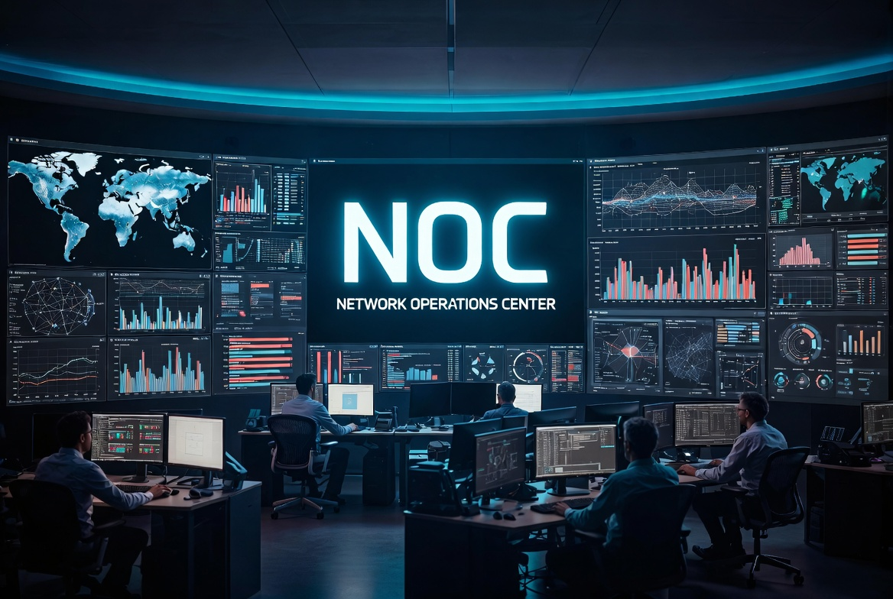

Un centre d'opérations réseau dédié qui surveille, détecte et optimise votre infrastructure en continu. Réactivité et fiabilité pour garantir la continuité de vos services critiques.
Le NOC (Network Operations Center) est le cerveau de votre infrastructure réseau. Contrairement au SOC qui se concentre sur les menaces cyber, le NOC garantit la disponibilité, les performances et la fiabilité de votre réseau.

Notre NOC couvre l'intégralité de votre infrastructure réseau, des équipements physiques aux services applicatifs.
Dès qu'une anomalie est détectée, notre équipe NOC déclenche un processus d'incident structuré pour une résolution rapide.
Cartographie complète, inventaire équipements, analyse des besoins.
Déploiement des sondes, configuration des alertes, dashboard personnalisé.
Surveillance 24/7, détection proactive, gestion des incidents.
Rapports mensuels, recommandations, amélioration continue.
Audit gratuit de 30 minutes pour évaluer vos besoins. Aucun engagement.
Demander un audit gratuit